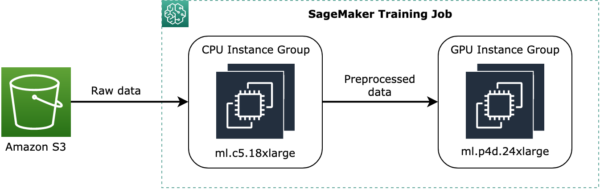

Train Using a Heterogeneous Cluster
Using the heterogeneous cluster feature of SageMaker Training, you can run a training job with multiple types of ML instances for a better resource scaling and utilization for different ML training tasks and purposes. For example, if your training job on a cluster with GPU instances suffers low GPU utilization and CPU bottleneck problems due to CPU-intensive tasks, using a heterogeneous cluster can help offload CPU-intensive tasks by adding more cost-efficient CPU instance groups, resolve such bottleneck problems, and achieve a better GPU utilization.
Note
This feature is available in the SageMaker Python SDK v2.98.0 and later.
Note
This feature is available through the SageMaker PyTorch
Topics
How to Configure a Heterogeneous Cluster
This section provides instructions on how to run a training job using a heterogeneous cluster that consists of multiple instance types.
Using the SageMaker Python SDK
Follow instructions on how to configure instance groups for a heterogeneous cluster using the SageMaker Python SDK.
-
To configure instance groups of a heterogeneous cluster for a training job, use the
sagemaker.instance_group.InstanceGroupclass. You can specify a custom name for each instance group, the instance type, and the number of instances for each instance group. For more information, see sagemaker.instance_group.InstanceGroupin the SageMaker Python SDK documentation. Note
For more information about available instance types and the maximum number of instance groups that you can configure in a heterogeneous cluster, see the InstanceGroup API reference.
The following code example shows how to set up two instance groups that consists of two
ml.c5.18xlargeCPU-only instances namedinstance_group_1and oneml.p3dn.24xlargeGPU instance namedinstance_group_2, as shown in the following diagram.The preceding diagram shows a conceptual example of how pre-training processes, such as data preprocessing, can be assigned to the CPU instance group and stream the preprocessed data to the GPU instance group.from sagemaker.instance_group import InstanceGroup instance_group_1 = InstanceGroup( "instance_group_1", "ml.c5.18xlarge",2) instance_group_2 = InstanceGroup( "instance_group_2", "ml.p3dn.24xlarge",1) -
Using the instance group objects, set up training input channels and assign instance groups to the channels through the
instance_group_namesargument of the sagemaker.inputs.TrainingInputclass. The instance_group_namesargument accepts a list of strings of instance group names.The following example shows how to set two training input channels and assign the instance groups created in the example of the previous step. You can also specify Amazon S3 bucket paths to the
s3_dataargument for the instance groups to process data for your usage purposes.from sagemaker.inputs import TrainingInput training_input_channel_1 = TrainingInput( s3_data_type='S3Prefix', # Available Options: S3Prefix | ManifestFile | AugmentedManifestFile s3_data='s3://your-training-data-storage/folder1', distribution='FullyReplicated', # Available Options: FullyReplicated | ShardedByS3Key input_mode='File', # Available Options: File | Pipe | FastFile instance_groups=["instance_group_1"] ) training_input_channel_2 = TrainingInput( s3_data_type='S3Prefix', s3_data='s3://your-training-data-storage/folder2', distribution='FullyReplicated', input_mode='File', instance_groups=["instance_group_2"] )For more information about the arguments of
TrainingInput, see the following links.-
The sagemaker.inputs.TrainingInput
class in the SageMaker Python SDK documentation -
The S3DataSource API in the SageMaker API Reference
-
-
Configure a SageMaker estimator with the
instance_groupsargument as shown in the following code example. Theinstance_groupsargument accepts a list ofInstanceGroupobjects.Note
The
instance_typeandinstance_countargument pair and theinstance_groupsargument of the SageMaker estimator class are mutually exclusive. For homogeneous cluster training, use theinstance_typeandinstance_countargument pair. For heterogeneous cluster training, useinstance_groups.Note
To find a complete list of available framework containers, framework versions, and Python versions, see SageMaker Framework Containers
in the AWS Deep Learning Container GitHub repository. -
Configure the
estimator.fitmethod with the training input channels configured with the instance groups and start the training job.estimator.fit( inputs={ 'training':training_input_channel_1, 'dummy-input-channel':training_input_channel_2} )
Using the Low-Level SageMaker APIs
If you use the AWS Command Line Interface or AWS SDK for Python (Boto3) and want to use low-level SageMaker APIs for submitting a training job request with a heterogeneous cluster, see the following API references.
Distributed Training with a Heterogeneous Cluster
Through the distribution argument of the SageMaker estimator class, you can
assign a specific instance group to run distributed training. For example, assume that
you have the following two instance groups and want to run multi-GPU training on one of
them.
from sagemaker.instance_group import InstanceGroup instance_group_1 = InstanceGroup("instance_group_1", "ml.c5.18xlarge", 1) instance_group_2 = InstanceGroup("instance_group_2", "ml.p3dn.24xlarge", 2)
You can set the distributed training configuration for one of the instance groups. For
example, the following code examples show how to assign training_group_2
with two ml.p3dn.24xlarge instances to the distributed training
configuration.
Note
Currently, only one instance group of a heterogeneous cluster can be specified to the distribution configuration.
With MPI
With the SageMaker data parallel library
Note
When using the SageMaker data parallel library, make sure the instance group consists of the supported instance types by the library.
For more information about the SageMaker data parallel library, see SageMaker Data Parallel Training.
With the SageMaker model parallel library
For more information about the SageMaker model parallel library, see SageMaker Model Parallel Training.
Modify Your Training Script to Assign Instance Groups
With the heterogeneous cluster configuration in the previous sections, you have prepared the SageMaker training environment and instances for your training job. To further assign the instance groups to certain training and data processing tasks, the next step is to modify your training script. By default, the training job simply makes training script replicas for all nodes regardless the size of the instance, and this might lead to performance loss.
For example, if you mix CPU instances and GPU instances in a heterogeneous cluster
while passing a deep neural network training script to the entry_point
argument of the SageMaker estimator, the entry_point script is replicated to
each instance. This means that, without proper task assignments, CPU instances also run
the entire script and start the training job that’s designed for distributed training on
GPU instances. Therefore, you must make changes in specific processing functions that
you want to offload and run on the CPU instances. You can use the SageMaker environment
variables to retrieve the information of the heterogeneous cluster and let specific
processes to run accordingly.
Query instance group information during the initialization phase of a SageMaker training job
When your training job starts, your training script reads SageMaker training environment information that includes heterogeneous cluster configuration. The configuration contains information such as the current instance groups, the current hosts in each group, and in which group the current host resides.
You can retrieve instance group information in the following ways.
(Recommended) Reading instance group information with the SageMaker training toolkit
Use the environment Python module that the SageMaker training toolkit
library
from sagemaker_training import environment env = environment.Environment()
Environment variables related to general SageMaker training and heterogeneous clusters:
-
env.is_hetero– Returns a Boolean result whether a heterogeneous cluster is configured or not. -
env.current_host– Returns the current host. -
env.current_instance_type– Returns the type of instance of the current host. -
env.current_instance_group– Returns the name of the current instance group. -
env.current_instance_group_hosts– Returns a list of hosts in current instance group. -
env.instance_groups– Returns a list of instance group names used for training. -
env.instance_groups_dict– Returns the entire heterogeneous cluster configuration of the training job. -
env.distribution_instance_groups– Returns a list of instance groups assigned to thedistributionparameter of the SageMaker estimator class. -
env.distribution_hosts– Returns a list of hosts belonging to the instance groups assigned to thedistributionparameter of the SageMaker estimator class.
For example, consider the following example of a heterogeneous cluster that consists of two instance groups.
from sagemaker.instance_group import InstanceGroup instance_group_1 = InstanceGroup( "instance_group_1", "ml.c5.18xlarge", 1) instance_group_2 = InstanceGroup( "instance_group_2", "ml.p3dn.24xlarge", 2)
The output of env.instance_groups_dict of the example heterogeneous
cluster should be similar to the following.
{ "instance_group_1": { "hosts": [ "algo-2" ], "instance_group_name": "instance_group_1", "instance_type": "ml.c5.18xlarge" }, "instance_group_2": { "hosts": [ "algo-3", "algo-1" ], "instance_group_name": "instance_group_2", "instance_type": "ml.p3dn.24xlarge" } }
(Optional) Reading instance group information from the resource configuration JSON file
If you prefer to retrieve the environment variables in JSON format, you can
directly use the resource configuration JSON file. The JSON file in a SageMaker training
instance is located at /opt/ml/input/config/resourceconfig.json by
default.
file_path = '/opt/ml/input/config/resourceconfig.json' config = read_file_as_json(file_path) print(json.dumps(config, indent=4, sort_keys=True))
Considerations
Consider the following items when using the heterogeneous cluster feature.
-
All instance groups share the same Docker image and training script. Therefore, your training script should be modified to detect which instance group it belongs to and fork execution accordingly.
-
The heterogeneous cluster feature is not supported in SageMaker local mode.
-
The Amazon CloudWatch log streams of a heterogeneous cluster training job are not grouped by instance groups. You need to figure out from the logs which nodes are in which group.
-
The heterogeneous cluster feature is available through the SageMaker PyTorch
and TensorFlow framework estimator classes. Supported frameworks are PyTorch v1.10 or later and TensorFlow v2.6 or later. To find a complete list of available framework containers, framework versions, and Python versions, see SageMaker Framework Containers in the AWS Deep Learning Container GitHub repository. -
A distributed training strategy can be applied only to one instance group.
Examples, Blogs, and Case Studies
The following blog discusses case studies about using the SageMaker heterogeneous cluster training.